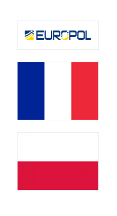

LOCKBIT
THIS ARCHIVE IS OVERSEEN AND UPDATED
BY BUGZORC UNTIL FEBRUARY 24TH 2024.
CHECK GITHUB FOR THE LATEST ARCHIVE.

Suspect arrested in Poland
In a meticulously coordinated effort that is emblematic of international cooperation, the Field Branch in Krakow Central Cybercrime Bureau executed a targeted operation at the request of French judicial authorities to apprehend a suspect involved in the world's most active ransomware operation to date. Joint intelligence gathering across borders facilitated the precise identification of an individual who is believed to have laundered a significant portion of the profits generated by the LockBit group. Through strategic planning and real-time information sharing between agencies via Europol's Virtual Command Post (VCP) and on-the-ground support, authorities acted quickly to capture the suspect, ensuring that no stone was left unturned in the pursuit of justice. Despite the relatively short period of time, after only a year and a half since the unit's inception, Central Cybercrime Bureau officers are equal partners in combating serious international cybercrime. This groundbreaking operation is a testament to the power of global cooperation and upholding the rule of law in an increasingly interconnected world.
Link: